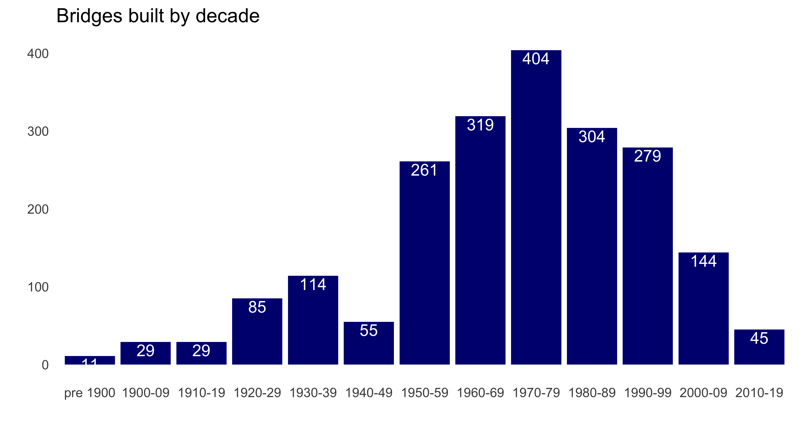
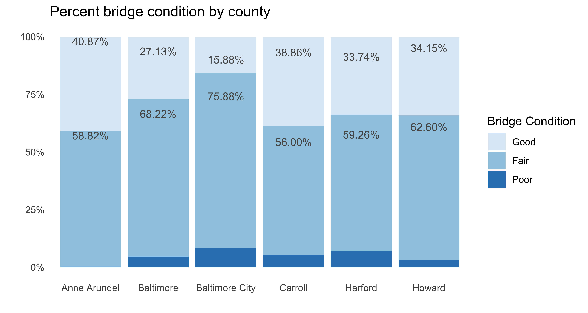
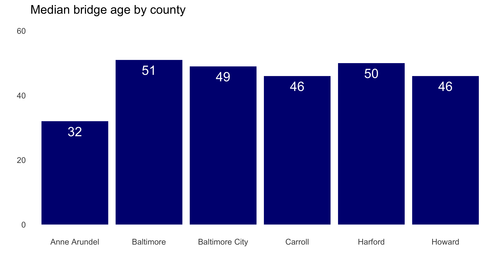
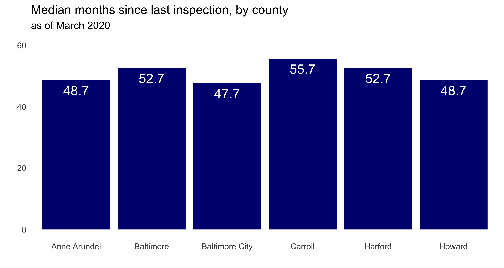
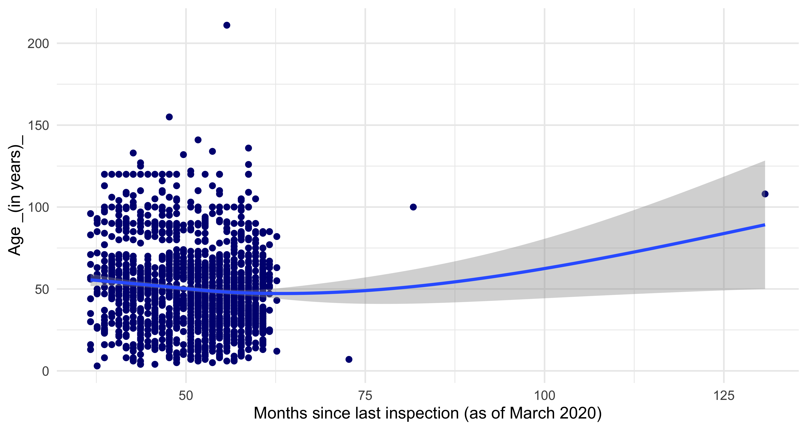
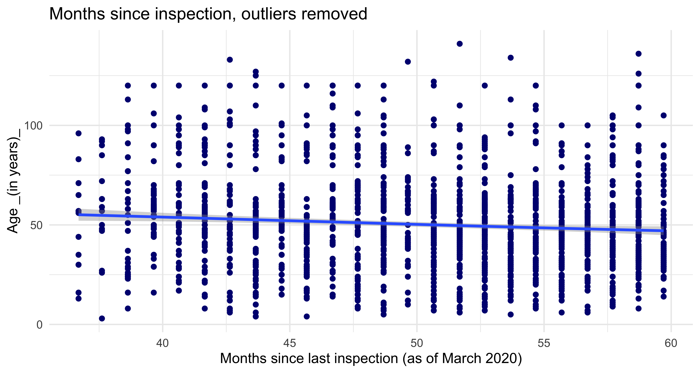
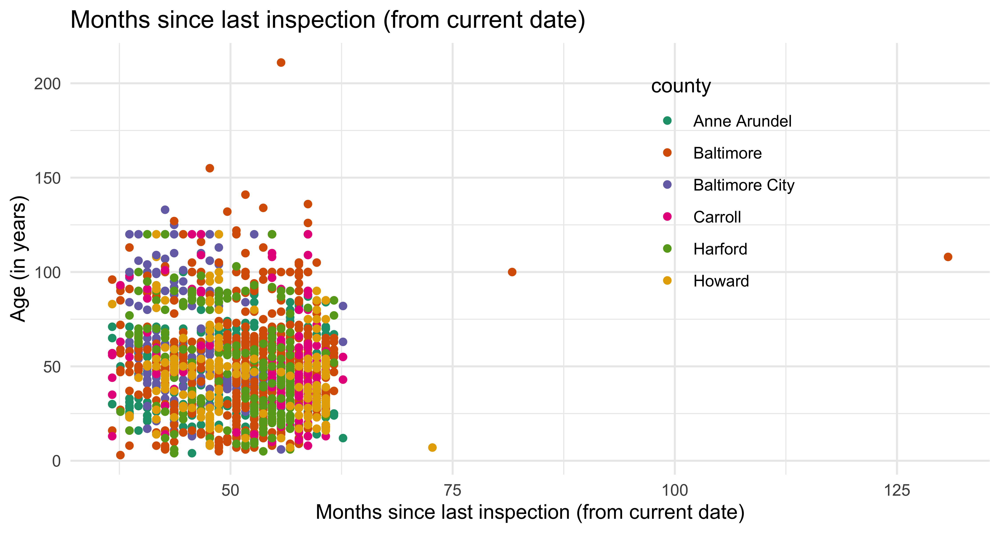
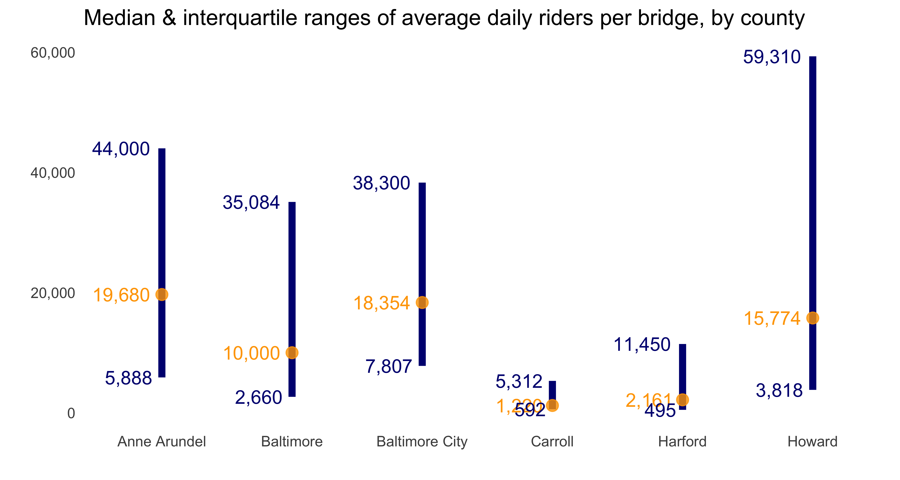
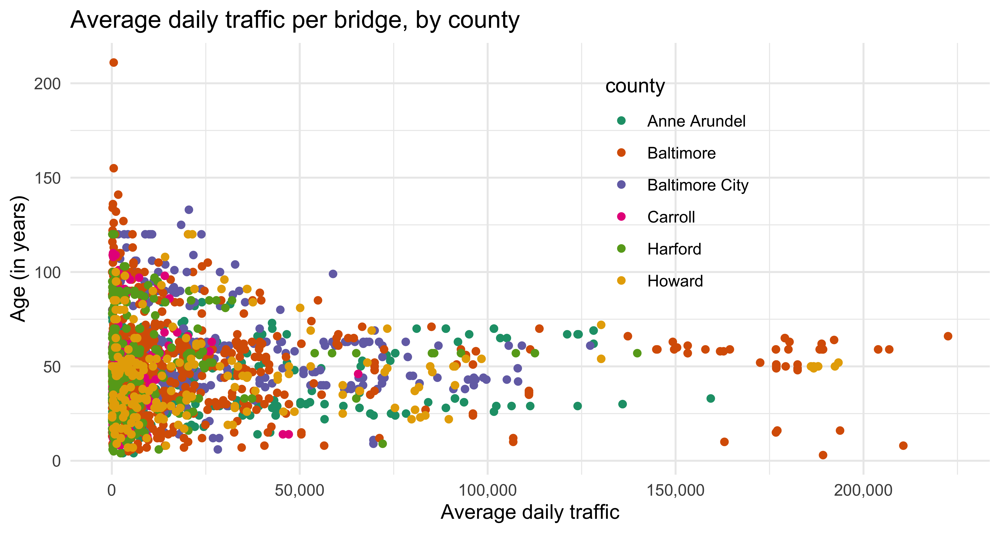

# readin in data, create df for plots
library(tidytuesdayR) # to load tidytuesday data
library(tidyverse) # to do tidyverse things
library(tidylog) # to get a log of what's happening to the data
library(patchwork) # stitch plots together
library(gt) # lets make tables
library(RColorBrewer) # colors!
library(scales) # format chart outputtt_balt_gh <-
read_csv("https://raw.githubusercontent.com/rfordatascience/tidytuesday/master/data/2018/2018-11-27/baltimore_bridges.csv",
progress = show_progress())
# keeping the comparison date March 21 when I originally did analysis
today <- as.Date(c("2020-03-21"))
#Sys.Date()
today_yr <- as.numeric(format(today, format="%Y"))
tt_mdbrdf <- as.data.frame(tt_balt_gh) %>%
mutate(age = today_yr - yr_built) %>%
# mutate(vehicles_n = as.numeric(str_remove(vehicles, " vehicles")))
## not needed, avg_daily_traffic has same info
mutate(inspection_yr = inspection_yr + 2000) %>%
mutate(county = ifelse(county == "Baltimore city", "Baltimore City", county)) %>%
mutate(county = str_replace(county, " County", "")) %>%
mutate(bridge_condition = factor(bridge_condition, levels = c("Good", "Fair", "Poor"))) %>%
mutate(decade_built = case_when(yr_built <= 1899 ~ "pre 1900",
yr_built >= 1900 & yr_built <1910 ~ "1900-09",
yr_built >= 1910 & yr_built <1920 ~ "1910-19",
yr_built >= 1920 & yr_built <1930 ~ "1920-29",
yr_built >= 1930 & yr_built <1940 ~ "1930-39",
yr_built >= 1940 & yr_built <1950 ~ "1940-49",
yr_built >= 1950 & yr_built <1960 ~ "1950-59",
yr_built >= 1960 & yr_built <1970 ~ "1960-69",
yr_built >= 1970 & yr_built <1980 ~ "1970-79",
yr_built >= 1980 & yr_built <1990 ~ "1980-89",
yr_built >= 1990 & yr_built <2000 ~ "1990-99",
yr_built >= 2000 & yr_built <2010 ~ "2000-09",
TRUE ~ "2010-19")) %>%
mutate(decade_built = factor(decade_built, levels =
c("pre 1900", "1900-09", "1910-19", "1920-29", "1930-39",
"1940-49", "1950-59", "1960-69", "1970-79",
"1980-89", "1990-99", "2000-09", "2010-19"))) %>%
mutate(inspect_mmyy = ISOdate(year = inspection_yr, month = inspection_mo, day = "01")) %>%
mutate(inspect_mmyy = as.Date(inspect_mmyy, "%m/%d/%y")) %>%
mutate(inspect_days = today - inspect_mmyy) %>%
mutate(inspect_daysn = as.numeric(inspect_days)) %>%
mutate(inspect_years = inspect_daysn/ 365.25) %>%
mutate(inspect_months = inspect_daysn / 30.417)Peak bridge-biulding in Maryland was 19502 through 1990s, with a significant drop since then.
tt_mdbrdf %>%
mutate(county = str_replace(county, " County", "")) %>%
count(decade_built) %>%
ggplot(aes(decade_built, n)) +
geom_bar(stat = "identity", fill = "navy") +
geom_text(aes(label = n), color = "white", vjust = 1.2) +
labs(title = "Bridges built by decade" ,
x = "", y = "") +
theme_minimal() +
theme(panel.grid.major = element_blank(), panel.grid.minor = element_blank())
Baltimore City has the lowest percentage of bridges in good condition, Anne Arundel the most. Baltimore City & Harford County seems to have the largest percentage of bridges in poor condition.
## percent bridge condition by county
# need to create df object to do subset label call in bar chart
brcondcty <-
tt_mdbrdf %>%
count(county, bridge_condition) %>%
group_by(county) %>%
mutate(pct = n / sum(n)) %>%
ungroup()
ggplot(brcondcty, aes(x = county, y = pct, fill = bridge_condition)) +
geom_bar(stat = "identity") +
geom_text(data = subset(brcondcty, bridge_condition != "Poor"),
aes(label = percent(pct)), position = "stack",
color= "#585858", vjust = 1, size = 3.5) +
scale_y_continuous(label = percent_format()) +
labs(title = "Percent bridge condition by county" ,
x = "", y = "", fill = "Bridge Condition") +
scale_fill_brewer(type = "seq", palette = "Blues") +
theme_minimal() +
theme(panel.grid.major = element_blank(), panel.grid.minor = element_blank())
Give the condition percentages, no surprise that Baltimore County & City and Harford County bridges are older than in other counties.
## median age of bridges by county
tt_mdbrdf %>%
group_by(county) %>%
summarise(medage = median(age)) %>%
ungroup() %>%
ggplot(aes(x = county, y = medage)) +
geom_bar(stat = "identity", fill= "navy") +
geom_text(aes(label = round(medage, digits = 1)),
size = 5, color = "white", vjust = 1.6) +
ylim(0, 60) +
labs(title = "Median bridge age by county" ,
x = "", y = "") +
theme_minimal() +
theme(panel.grid.major = element_blank(), panel.grid.minor = element_blank())
It’s somewhat reassuring then that Baltimore City bridges at least have less time in months since last inspection than do the counties.
## median months since last inspection by county
tt_mdbrdf %>%
group_by(county) %>%
summarise(medinsp = median(inspect_months)) %>%
ungroup() %>%
ggplot(aes(x = county, y = medinsp)) +
geom_bar(stat = "identity", fill= "navy") +
geom_text(aes(label = round(medinsp, digits = 1)),
size = 5, color = "white", vjust = 1.6) +
ylim(0, 60) +
labs(title = "Median months since last inspection, by county",
subtitle = "as of March 2020",
x = "", y = "") +
theme_minimal() +
theme(panel.grid.major = element_blank(), panel.grid.minor = element_blank())
It might be the outliers pulling the smoothing line straight, but doesn’t seem to be too much of a relartionship between age and time since last inspection.
## age by months since last inspection
tt_mdbrdf %>%
ggplot(aes(inspect_months, age)) +
geom_point(color = "navy") +
geom_smooth() +
labs(x = "Months since last inspection (as of March 2020)",
y = "Age _(in years)_") +
theme_minimal()
And in fact, removing the outliers shows a slight relationship; the older bridges do seem to get inspected more frequently. In terms of a better visualization, looking at this again, I wonder if some jittering or another type of plot might have been more visually appealing, givne the clustering of most recent inspections.
# same but outliers removed
tt_mdbrdf %>%
filter(age <150, inspect_months <60) %>%
ggplot(aes(inspect_months, age)) +
geom_point(color = "navy") +
geom_smooth() +
labs(title = "Months since inspection, outliers removed",
x = "Months since last inspection (as of March 2020)",
y = "Age _(in years)_") +
theme_minimal()
Not sure if scatter-plot with colors by county is best way to go for this idea. Maybe a tree map?
# same but colors by county
tt_mdbrdf %>%
ggplot(aes(inspect_months, age, color = county)) +
geom_point() +
scale_color_brewer(palette="Dark2") +
labs(title = "Months since last inspection (from current date)",
x = "Months since last inspection (from current date)",
y = "Age (in years)") +
theme_minimal() +
theme(legend.position = c(.8, .95),
legend.justification = c("right", "top"),
legend.box.just = "right",
legend.margin = margin(6, 6, 6, 6))
Funky distributions here…Anne Arundel & Baltimore City have the highest median daily riders, but Howard County’s upper quartile is way out there.
# median & interquartiles of daily riders of bridges by county -
tt_mdbrdf %>%
group_by(county) %>%
summarise(medtraf = median(avg_daily_traffic),
lq = quantile(avg_daily_traffic, 0.25),
uq = quantile(avg_daily_traffic, 0.75)) %>%
ungroup() %>%
ggplot(aes(county, medtraf)) +
geom_linerange(aes(ymin = lq, ymax = uq), size = 2, color = "navy") +
geom_point(size = 3, color = "orange", alpha = .8) +
geom_text(aes(label = comma(medtraf, digits = 0)),
size = 4, color = "orange", hjust = 1.2) +
geom_text(aes(y = uq, label = comma(uq, digits = 0)),
size = 4, color = "navy", hjust = 1.2) +
geom_text(aes(y = lq, label = comma(lq, digits = 0)),
size = 4, color = "navy", hjust = 1.2) +
scale_y_continuous(label = comma) +
labs(title = "Median & interquartile ranges of average daily riders per bridge, by county" ,
x = "", y = "") +
theme_minimal() +
theme(panel.grid.major = element_blank(), panel.grid.minor = element_blank())
As with the other scatterplot with colors for county, might need a different way to see relationship between bridge age and daily traffic by county.
## age by avg daily riders by county
tt_mdbrdf %>%
ggplot(aes(avg_daily_traffic, age, color = county)) +
geom_point() +
scale_color_brewer(palette="Dark2") +
scale_x_continuous(labels = comma) +
labs(title = "Average daily traffic per bridge, by county" ,
x = "Average daily traffic",
y = "Age (in years)") +
theme_minimal() +
theme(legend.position = c(.75, .95),
legend.justification = c("right", "top"),
legend.box.just = "right",
legend.margin = margin(6, 6, 6, 6))
This post was last updated on 2020-11-29